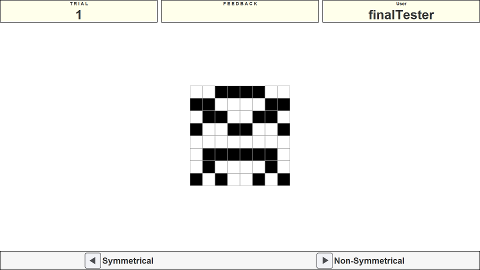
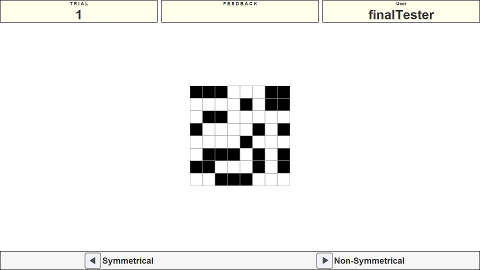
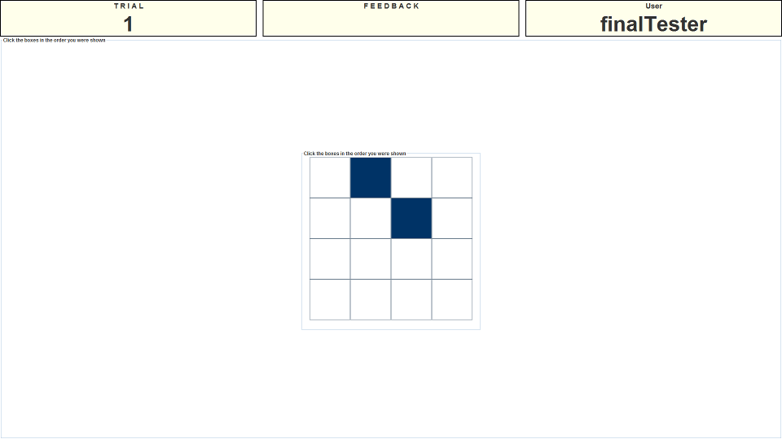

Instructions
Presentation Phase
This is the symmetry span task. You will be shown a 4x4 matrix in the center of the screen. A number of the grids in this matrix will turn blue one at a time (between 2 and 7 grids in any one trial). Image one shows an example of what the matrix looks like while one of the grids is coloured.

After seeing the grid light up you will then be shown a new matrix in the middle of the screen with a filled pattern. You need to decide if the pattern is symmetrical or not. The image below shows an example of each, the left image is a symmetrical pattern while the right image is non-symmetrical. Use the left and right arrow keys to give your judgement.


Recall
After you have been shown the grids to remember and judged the symmetry of the patterns you will be presented with an empty grid that you can use to input your response. Simply click the grids in the order you remember seeing them light up. Once you click a grid it will change colour to indicate you have selected it. Image two shows an example of what the task looks like while somebody is midway through inputting their response.

Remember that a trial is only completely correct if your symmetry judgements are also accurate. Both parts of the trial contribute to your score.